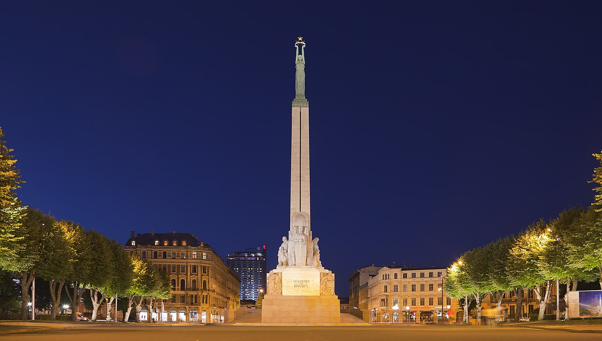
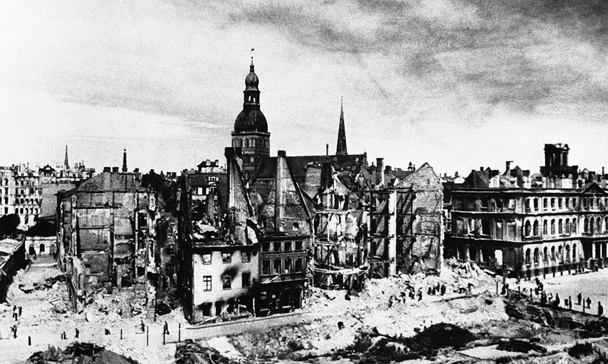
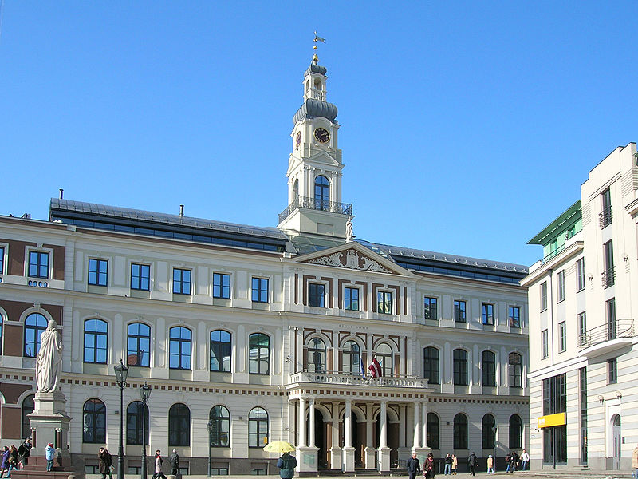
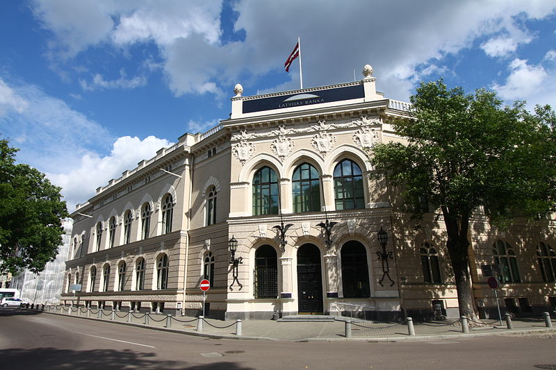

Riga was founded in 1201 and is a former Hanseatic League member. Riga's historical centre is a UNESCO World Heritage Site, noted for its Art Nouveau/Jugendstil architecture and 19th century wooden architecture. Riga was the European Capital of Culture in 2014, along with Umeå in Sweden. Riga hosted the 2006 NATO Summit, the Eurovision Song Contest 2003, the 2006 IIHF Men's World Ice Hockey Championships, 2013 World Women's Curling Championship and the 2021 IIHF World Championship. It is home to the European Union's office of European Regulators for Electronic Communications (BEREC). In 2017, it was named the European Region of Gastronomy. In 2016, Riga received over 1.4 million visitors. The city is served by Riga International Airport, the largest and busiest airport in the Baltic states. Riga is a member of Eurocities, the Union of the Baltic Cities (UBC) and Union of Capitals of the European Union (UCEU).
The history of Riga, the capital of Latvia, begins as early as the 2nd century with a settlement, the Duna urbs, at a natural harbor not far upriver from the mouth of the Daugava River. Later settled by Livs and Kurs, it was already an established trade center in the early Middle Ages along the Dvina-Dnieper trade route to Byzantium. Christianity had come to Latvia as early as the 9th century, but it was the arrival of the Crusades at the end of the 12th century which brought the Germans and forcible conversion to Christianity; the German hegemony instituted over the Baltics lasted until independence—and is still preserved today in Riga's Jugendstil (German Art Nouveau) architecture. From the 13th century to the birth of nationalism in the 19th and independence in the 20th, Latvia's and Riga's history are intertwined, a chronicle of the rise and fall of surrounding foreign powers over the Latvians and their territory. As a member of the Hanseatic League, Riga's prosperity grew throughout the 13th–15th centuries—with Riga to become a major center of commerce and later, industry, of whatever empire it found itself subject of.
The head of the city government in Riga is the mayor, or officially the Chairman of the Riga City Council. He is assisted by one or more Vice Mayors (deputy mayors). The current mayor since October 2020 is Mārtiņš Staķis elected from Movement For!, which is a part of the Development/For!/Progressives faction, but on March 24 2022 he left the party. The three other parties in the governing coalition each received a Vice Mayor post. The city council is a democratically elected institution and is the final decision-making authority in the city. The Council consists of 60 members or deputies who are elected every four years. The Presidium of the Riga City Council consists of the Chairman of the Riga City Council and the representatives delegated by the political parties or party blocks elected to the City Council. From February to October 2020, the offices of the Mayor and Vice Mayors were suspended and the council itself had been dissolved and replaced by an interim administration of representatives from three governmental ministries until snap elections were held in 2020.
Riga is one of the key economic and financial centres of the Baltic states. Roughly half of all the jobs in Latvia are in Riga and the city generates more than 50% of Latvia's GDP as well as around half of Latvia's exports. The biggest exporters are in wood products, IT, food and beverage manufacturing, pharmaceuticals, transport and metallurgy. Riga Port is one of the largest in the Baltics. It handled a record 34 million tons of cargo in 2011 and has potential for future growth with new port developments on Krievu Sala. Tourism is also a large industry in Riga and after a slowdown during the global economic recessions of the late 2000s, grew 22% in 2011 alone. Riga was intended to become the global financial centre in the former Soviet Union. One bank, which provided high levels of secrecy for its customers, promoted itself as "We are closer than Switzerland!" (Russian: «Мы ближе, чем Швейцария!») On 28 July 1995, twenty Latvian banks with assistance of persons from the Paris Stock Exchange organised the Riga Stock Exchange which was the first Latvian stock exchange in Riga.
